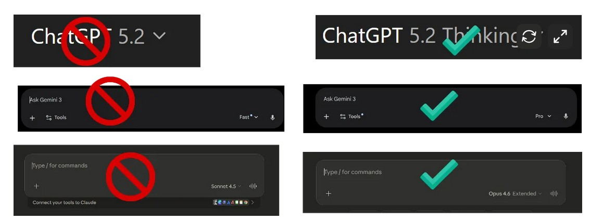
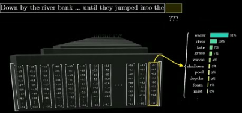

2 Grundbegriffe
Nach diesem Kapitel können Sie …
- in Laiensprache erklären, wie ein Sprachmodell Text erzeugt, warum es dabei halluziniert und was daraus für die Lehre folgt;
- die Nutzungsmuster LLM, RAG und Agent unterscheiden, Modell und Harness abgrenzen und für eine Lehraufgabe das passende Setup wählen;
- mit der Jagged Frontier begründen, warum Modelle bei ähnlich schwierigen Aufgaben sehr unterschiedlich abschneiden;
- einen Prompt aus Rolle, Aufgabe, Format und Beispielen bauen und verbreitete Prompt-Tricks als wirkungslos erkennen.
Probleme aus dem Lehralltag, zu denen dieses Kapitel Lösungen anbietet. Wählen Sie eine Antwort, bevor Sie weiterlesen: Wer vorher rät, behält die Auflösung besser. Die Kernaussagen am Kapitelende greifen die Probleme in derselben Reihenfolge auf.
Ein Chatbot nennt einer Studentin eine Quelle mit Autor, Jahr und Titel. Die Quelle existiert nicht. Woran liegt das?
- An einem Programmierfehler, den das nächste Update behebt.
- Daran, dass das Modell auf überzeugende Antworten trainiert wurde, um zu täuschen.
- Daran, dass das Modell das wahrscheinlichste nächste Wort erzeugt, ohne Wahrheitsprüfung.
Halluzinationen folgen aus der Funktionsweise und lassen sich nicht ganz abstellen, nur eindämmen: durch eingegrenzten Input, Musterlösungen und systematische Prüfung (Kapitel 2.2).
Ein Chatbot soll Fragen zu Ihrem Skript beantworten, und zwar nur aus Ihrem Skript. Welches Setup passt?
- Ein Modell, das vor jeder Antwort passende Stellen aus dem Skript abruft (RAG).
- Ein reines Sprachmodell mit der Anweisung „Antworte nur aus dem Skript“.
- Ein Agent, der selbstständig im Internet nach dem Skript sucht.
Mit RAG bekommt das Modell ein Bücherregal; für die Lehre ist das meist der richtige Einstieg. RAG macht das Modell kundiger, nicht selbstständiger. Ein Agent bekäme einen Werkzeugkoffer und Handlungsspielraum, den diese Aufgabe nicht braucht (Kapitel 2.1.2).
Ein Modell löst eine anspruchsvolle Statistikaufgabe tadellos und verzählt sich bei den Buchstaben eines Wortes. Wie erklärt sich das?
- Das Modell war bei der zweiten Anfrage überlastet.
- Seine Fähigkeiten folgen nicht unserer Vorstellung von schwer und leicht.
- Einfache Aufgaben brauchen einen ausführlicheren Prompt.
Die Fähigkeiten der Modelle bilden eine zerklüftete Grenze, die Jagged Frontier. Wer sie nicht kennt, arbeitet mit KI schlechter als ohne (Kapitel 2.4).
Ein Kollege beginnt jeden Prompt mit „Du bist ein Weltklasse-Experte, ich gebe dir 200 Dollar Trinkgeld“. Die Ergebnisse bleiben mittelmäßig. Was hilft stattdessen?
- Ein höheres Trinkgeld oder eine Drohung mit Konsequenzen.
- Derselbe Prompt auf Englisch und mit Großbuchstaben.
- Aufgabe, Format und Beispiele so präzise wie für eine neue Hilfskraft.
Höflichkeit, Drohungen und Trinkgeld ändern nichts. Wer das Modell wie eine junge Hilfskraft anleitet, präzise, strukturiert und mit Beispielen, kommt weiter (Kapitel 2.5.5).
Studierende fragen, ob sie aus Klimagründen auf KI verzichten sollten. Welche Einordnung trifft zu?
- Eine Anfrage verbraucht wenig, der Gesamtbedarf der Rechenzentren wächst stark.
- Eine Anfrage verbraucht so viel Strom wie eine Waschmaschinenladung.
- KI fällt im Energiebedarf der Rechenzentren kaum ins Gewicht.
Beides stimmt zugleich: Eine Textanfrage liegt bei Bruchteilen einer Wattstunde, aber der Bedarf der Infrastruktur wächst schneller als die Effizienz. Die Steuerung ist eine politische Aufgabe (Kapitel 2.6).
2.1 Definition einiger Grundbegriffe
In diesem Abschnitt definieren wir anfangs sehr kurz einige Grundbegriffe. Dies kratzt bewusst nur an der Oberfläche eines komplexen technischen Themas: Unser Fokus liegt auf der didaktischen Nutzung.
Wie in der Einleitung kurz angesprochen, ist es seit der agentischen Wende (s. Kapitel 1.4) in der Arbeit mit GenAI noch wichtiger geworden, einen hochwertigen Setup zu haben, also eine Mischung aus einem schlauen Modell, praktischer Oberfläche und sinnvollen Tools (E. Mollick, 2026). Grobe Regel: Wenn das Ergebnis wichtig ist, nie ein kostenfreies Modell wählen.

Wenn Sie neugierig geworden sind, gibt es jenseits dieses Buches gute Quellen, um tiefer einzusteigen: Als visuelle Begleitung empfehle ich das sehr schöne Einführungsvideo des Mathematik-Didaktikers Grant Sanderson (7 Minuten, https://youtu.be/LPZh9BOjkQs). Tiefer in die mathematischen Details geht die grafische und interaktive Einführung als Animation von Brendan Bycroft (https://bbycroft.net/llm). Wer sich auch die technischen Hintergründe genauer erschließen will, dem sei das Lehrbuch-Standardwerk von Jurafsky & Martin (2025) empfohlen, das online frei verfügbar ist.
Welche der Fachbegriffe kennen Sie schon? Von Prompt bis Token, über Temperatur und RAG: Testen Sie sich selbst mit dem folgenden kleinen Spiel.
Ordnen Sie die Begriffe den korrekten Definitionen zu! Am Start wählen Sie zwischen Grundbegriffen und dem Level Fortgeschritten mit Agenten-Begriffen und einer Diagnose-Runde zu typischen Problemen wie Cognitive Debt, Sycophancy oder Prompt Injection.
(am besten auf dem Computer spielen). Hier auch Online abrufbar (so etwas nennt sich „Artifact“ beim Sprachmodell „Claude“): https://claude.site/artifacts/d8e3cee4-ea47-48e3-a84c-a774d408aac8
Vorweg: Was heißt hier ‘künstliche Intelligenz’? In diesem Buch folgen wir weitgehend dem alltäglichen Sprachgebrauch, indem wir die Begriffe KI, generative KI (GenAI) und Sprachmodell (Large Language Model, LLM) weitgehend synonym verwenden. Eigentlich ist generative künstliche Intelligenz - wie der Name es schon andeutet - ein Teilgebiet der KI, also des Versuches, menschliches Denken und Verhalten nachzubilden (Russell & Norvig, 2021). Für die meisten Nutzer sind die Feinheiten von KI, maschinellem Lernen und neuronalen Netzen allerdings in unserem Kontext eine Unterscheidung, die praktisch keinen Unterschied macht: Die meisten Lehrenden nutzen aktiv erst KI, seit es die modernen Sprachmodelle gibt. In der Nutzung für die Lehre gilt für fast alle von uns: KI = GenAI, auch wenn im Hintergrund schon seit Jahrzehnten mit KI die Routen von Lieferdiensten oder die Lagerhaltung in Supermärkten vorhergesagt wird.
KI vor 2022 und KI nach 2022 meint meist etwas anderes. Was oft auch Studierende verwirrt: Ältere Fachartikel vor 2022 mit Titeln wie “KI-Anwendungen in XY” meinen aus Anwendersicht mit ‘KI’ etwas ganz anderes als die Publikationen seit 2022 zu den verschiedenen Anwendungsformen von menschenähnlich schreibenden, sprechenden und analysierenden Chatbots. Früher ging es aus Anwendersicht grob gesagt meist um bessere statistische Prognosemodelle zur Nutzung durch Expertinnen und Experten (etwa für optimale Routen oder Personalauswahl) (Russell & Norvig, 2021). Seit ChatGPT sprechen wir von viel breiteren Formen der Nutzung, Milliarden von Usern und extremer KI-Hype.
Ein Large Language Model (LLM) ist ein maschinelles Lernmodell, das darauf trainiert ist, menschliche Sprache zu verstehen und Texte zu erzeugen, die natürlich erscheinen. Ein Sprachmodell ist ein Rechensystem, das das nächste Wort in einer Wortkette vorhersagt, basierend auf den vorher genannten Wörtern in dieser Kette (Jurafsky & Martin, 2025, Kap.7, S.2). Die Modelle können riesige Mengen von Textdaten verarbeiten, um vielseitige Sprachanwendungen zu ermöglichen.
Die generative Künstliche Intelligenz (GenAI) bezieht sich auf Systeme, die fähig sind, neue Inhalte zu erzeugen, wie etwa Texte, die noch nicht existierten. LLMs sind ein zentraler Teil dieser generativen KI und können eigenständig Texte zu einem breiten Spektrum von Themen generieren.
Können Sie in HTML programmieren? Jetzt schon. Die Lernspiele in diesem Abschnitt wurden mit Hilfe von Sprachmodellen erstellt (Gemini, ChatGPT, Claude). Meist mit einer Variation des einfachen Prompts: „Erstelle mir ein browser-basiertes Lernspiel zum Thema / zur Illustration von …“. Oft hat man nach 5–10 Minuten eine gute erste Version. In der Lehre mache ich das oft auch als Übung mit Studierenden. Sie sollen dann erst mit Hilfe der KI ein Lernspiel erstellen und dann begründet bewerten, welcher Spiel-Prototyp das Konzept am besten darstellt. Bei etwas mehr Zeit kann man sie gegenseitig bewerten lassen, selbst Kriterien erstellen oder stärkere Gamification hinzufügen. Im Ergebnis beschäftigen sich idealerweise die Teilnehmer intensiv mit einem theoretischen Konzept (Bei komplexeren Themen hilft es, einen Fachtext als Hintergrund zum Konzept hochzuladen.)
Das Sprachmodell zerlegt dazu grob gesagt Inputs wie Texte in kleine Bausteine (Tokens), verwandelt diese in Zahlen (Embeddings), erkennt mithilfe komplexer Muster (Transformer und Attention) deren Zusammenhänge, und erzeugt auf diese Weise selbstständig basierend auf kontextbezogen berechneten Wahrscheinlichkeiten neue Texte (generative Sprachproduktion).
Damit Sprachmodelle wie ChatGPT Sprache verstehen und erzeugen können, zerlegen sie Text in sogenannte Tokens – kleine Bausteine wie Wörter, Wortteile oder Satzzeichen (s. etwa Jurafsky & Martin, 2025, Kap.2). Jedes dieser Tokens wird in einen Vektor umgewandelt – eine Zahlenreihe, die das Wort mathematisch beschreibt. Dieser Vorgang nennt sich Embedding. Dabei wird darauf geachtet, dass ähnliche Wörter ähnliche Vektoren erhalten, beispielsweise „Hund“ und „Katze“.
Hier kann man das selbst einfach ausprobieren: Das interaktive Widget simuliert eine GPT-2-ähnliche Tokenisierung.
Die Simulation vermittelt ein Gefühl für den Prozess. Wie die Umwandlung eines bestimmten Textes genau in verschiedenen Sprachmodellen aussieht, können Sie interaktiv auf Webseiten wie Tiktokenizer ausprobieren: https://tiktokenizer.vercel.app/.
Ein Prompt ist eine Eingabeaufforderung, die an ein LLM gesendet wird, um eine spezifische Antwort zu erhalten. Wie der Prompt formuliert wird, kann entscheidend für die Qualität der generierten Antworten sein. Die Kunst, solche Befehle zu schmieden nennt sich Prompt Engineering (Berryman & Ziegler, 2025).
Eine neuere Analyse unterscheidet drei Effekte der Prompt-Gestaltung (Vallverdú et al., 2025): User steuern über Prompts den Inhalt der Aufgabe (operativ), die ‘Aufmerksamkeit’ des Sprachmodells (epistemisch) und die Risiken des Ergebnisses (sozio-ethisch). Stärkere Sprachmodelle übernehmen einen Teil dieser Steuerung, die Komplexität rückt aber damit nur auf eine höhere Ebene: In agentischen Workflows arbeiten mehrere Agenten zusammen, für deren Steuerung wir wiederum operative, epistemische und sozio-ethische Effekte berücksichtigen müssen (s. etwa Gottweis et al., 2025 für ein Beispiel).
2.1.1 Was heißt hier GPT?
GPT steht für Generative Pre-trained Transformer. Wir schauen zunächst, was diese drei Begriffe bedeuten.
‘Generative’: Der Begriff „generativ“ bedeutet in diesem Zusammenhang, dass GPT eigenständig Texte erzeugt, indem es gelernte Muster neu kombiniert.
‘Pretrained’: GPT wurde mit riesigen Textmengen vortrainiert (Pretraining), ohne konkrete Aufgaben lösen zu müssen – dieser Vorgang erfolgt unüberwacht (unsupervised learning). Beim ‘Bau’ solcher Sprachmodelle bewerten menschliche Expertinnen und Experten den ersten Output („Reinforcement Learning with Human Feedback“ (RLHF)), um so ein genaueres Modell dafür zu erstellen, was für User nützlich ist und was nicht. Dabei erzeugt das LLM zunächst verschiedene Textversionen, die von menschlichen Bewertern beurteilt werden.Durch diesen Prozess „lernt“ das LLM, Texte zu bevorzugen, die nicht nur sprachlich richtig, sondern für Menschen besonders verständlich und nützlich sind. Das macht es möglich, dass GPT später aus wenigen Stichworten neue Texte generieren kann – also kreativ Sprache produziert, ohne bloß zu kopieren (generativ).
‘Transformer’: Das Herzstück des GPT ist der sogenannte Transformer, ein Rechenmodell mit einem Aufmerksamkeitsverfahren (Attention): Für jedes Wort (genauer: jedes Token) gewichtet es, welche anderen Wörter im Text für seine Bedeutung am wichtigsten sind, ähnlich wie man bei einer Literaturrecherche die passenden Quellen stärker in das eigene Verständnis einfließen lässt. So erkennt GPT in einem Satz wie „Die Bank steht unter einem Baum“ anhand des Kontextes, ob „Bank“ ein Möbelstück oder eine Institution meint. Der Fachartikel von 2017, der das Verfahren vorstellte und die KI-Welle seit 2022 mit auslöste, trägt den knackigen Titel “Attention is all you need” (Vaswani et al., 2017); er wurde bis 2026 mehr als 200.000-fach zitiert.
Was behält das Sprachmodell von unserer Unterhaltung? Wie viel Text kann ich – auch als PDF – hochladen? Moderne LLMs können ganze Bücher schnell aufsaugen und dann zusammenfassen (z. B. Claude, ChatGPT oder Gemini). Das Kontext-Fenster eines LLM beschreibt die Menge an vorherigem Text, die das Modell bei der Verarbeitung neuer Informationen berücksichtigt, um den Kontext und die Zusammenhänge zu verstehen.
Ein Agent ist in der KI-Forschung allgemein etwas, das seine Umwelt wahrnimmt (durch Sensoren) und auf sie einwirkt (durch Aktoren) (Russell & Norvig, 2021, S.54). Seine Architektur sind bildlich gesprochen Augen und Hände, also was er wahrnehmen und tun kann (für GenAI-Agenten etwa: Hat er Web-Anbindung, kann er programmieren?); sein Programm ist das Regelbuch, nach dem er reagiert (Russell & Norvig, 2021, S.65ff.). Mit solchen Agenten können Lehrende interaktive und personalisierte Lerninhalte einfacher gestalten (E. R. Mollick & Mollick, 2024); was einen Agenten in der heutigen Praxis ausmacht, zeigt Kapitel 2.1.3.
Schlau sein allein reicht nicht: Ein Sprachmodell muss zwar einerseits ‘intelligent’ genug sein, um eine gestellte Aufgabe zu lösen. Aber auch der schlauste helfende Geist kann uns nur helfen, wenn er auch versteht, was wir eigentlich wollen und brauchen - er muss den Kontext unserer Aufgabe kennen.
Einen solchen Kontext können wir der KI auf zwei Arten bereitstellen: Bildlich gesprochen geben wir ihr ein paar Bücher oder einen Werkzeugkoffer. Präziser ausgedrückt sind das die beiden vorherrschenden Muster RAG und Agenten (Huyen, 2025, Kap.6). Bei RAG (Retrieval-Augmented Generation) holt das System passende Stellen aus zusätzlichen Dokumenten wie Fachtexten, Statistiken oder Gesetzesbüchern und legt sie dem Modell zur Antwort vor: Die KI ist das Gehirn, die Dokumentsammlung das Bücherregal. Ein Agent beschafft sich Informationen dagegen selbst, mit Werkzeugen wie der Websuche. Wie beides in der Lehre eingesetzt und geprüft wird, zeigt Kapitel 2.1.4.
Einige Unterschiede zwischen einem einfachen Sprachmodell (LLM) und dem Setup mit Zusatzmaterial (RAG) und erlaubter Werkzeugnutzung (Tool Use, Agenten) sehen wir an der folgenden Interaktion. Wählen Sie hier jeweils die passende Antwort (die Übung ist nicht schwer - überlegen Sie sich zusätzlich ein Beispiel dafür aus Ihrem Berufsalltag!).
Runter scrollen und “Los gehts!” auswählen, dann nacheinander die Interaktionen für LLM, RAG und Agent auswählen und die Fragen beantworten.
In der Lehre kann RAG verwendet werden, um den Studierenden Fachtexte oder besonders aktuelle Informationen zur Verfügung zu stellen. Beispielsweise könnten Studierende in einem Geschichtsseminar eine KI befragen, die externe Quellen durchforstet, um aktuelle Erkenntnisse zu historischen Ereignissen zu präsentieren (Huffman & Hutson, 2024). Unternehmen nutzen diese Technik, um etwa riesige Gebrauchsanweisungen mit KI durchsuchbar zu machen (Brynjolfsson et al., 2025), oder Chatbots zu trainieren, die typische, repetitive Kundenanfragen beantworten (Handa et al., 2025).
2.1.2 Was nutzen - LLM, RAG oder Agent?
Wie unterscheiden sich die verschiedenen Nutzungs-Muster, die wir bis jetzt kennengelernt haben? Frage ich nur das Sprachmodell? Oder lieber das Sprachmodell mit Zusatz-Material (RAG)? Oder vielleicht das Sprachmodell mit Tools (Agenten)? Prüfen Sie Ihr Verständnis: Welche der links gezeigten Antworten passen zu welchem der rechts gezeigten Muster? Nutzt das Sprachmodell nur sein “Standard-Wissen” (LLM only), oder werden “Werkzeuge” wie Internet-Nutzung erlaubt?
In der Praxis kommt eine vierte Entscheidungsfrage hinzu (E. Mollick, 2026): Was steckt um das Modell herum? Welche Werkzeuge, welches Gedächtnis und wie viel Handlungsspielraum ein Angebot dem Modell gibt, entscheidet darüber, ob es tatsächlich recherchieren, rechnen und Dateien erzeugen kann; der nächste Abschnitt führt dafür den Begriff Harness ein (Kapitel 2.1.3). Für Lehraufgaben bewährt sich ein Workflow, der erst eigenes Material als Kontext nutzt (RAG/Notebook-Ansatz), dann für belastbare Quellen einen Research-Harness (z. B. „Deep Research“) einsetzt und die Ergebnisse als Artefakte exportiert (Quiz, Aufgabenblatt, Folien) – bevor Sie didaktisch zuspitzen.
Die drei Muster liegen auf einer Skala, und an ihr zählt nicht, ob ein System Quellen oder Werkzeuge hat, sondern wer den Ablauf bestimmt. In einem Workflow folgen Modell und Werkzeuge fest programmierten Pfaden; in einem Agenten steuert das Modell seinen Ablauf und seine Werkzeugnutzung selbst (Schluntz & Zhang, 2024). Roucher et al. (2024) fassen den Übergang in eine Skala aus drei Sternen, die eine einzige Frage stellt: Wie stark bestimmt die Ausgabe des Modells, was das Programm als Nächstes tut? Ein Chatbot, der vor jeder Antwort passende Stellen aus den Skripten holt, bleibt danach auf der untersten Stufe, denn die Suche läuft immer, gleich was das Modell schreibt. RAG macht das Modell kundiger, nicht selbstständiger. Die folgende Animation baut den Weg vom Chatbot zum Agenten in dreizehn Schritten auf; die Bildfolge stammt von Grootendorst (2025b), die Schleife aus Denken, Handeln und Beobachten von Yao et al. (2023). Den Rahmen, der dem Modell seinen Spielraum gibt und begrenzt, behandelt Kapitel 2.1.3.
Geben Sie zuerst Ihre Vorhersage ab und klicken Sie sich dann durch die Schritte.
2.1.3 Was sich seit 2022 geändert hat: Modell, Harness und Agent
Wer 2022 mit ChatGPT gearbeitet hat und 2026 einem Agenten einen Rechercheauftrag gibt, erlebt zwei verschiedene Werkzeuge. Am Prinzip des Sprachmodells hat sich dabei wenig geändert: Es bekommt Text und setzt ihn wahrscheinlich fort. Gewachsen ist vor allem die Schicht um das Modell herum. Sie hat zwei Dinge hinzugewonnen, Werkzeuge und Gedächtnis, und aus beiden folgt ein drittes: Das Modell darf mehr Arbeitsschritte selbst wählen. Für diese Schicht setzt sich der Name Harness durch, für das, was beim Arbeiten aus Modell und Harness entsteht, der Name Agent. Die folgende Animation baut den Weg in acht Schritten auf.
Geben Sie zuerst Ihre Vorhersage ab und klicken Sie sich dann durch die Schritte.
Ausgangspunkt: das Modell allein. Um 2022 war das Chatfenster die ganze Schnittstelle. Wir tippten eine Frage, das Modell lieferte Text, und alles Weitere taten wir selbst: Zahlen nachrechnen, Quellen suchen, das Ergebnis in eine Datei kopieren, die Antwort prüfen und die nächste Frage stellen. Das Modell konnte nichts nachschlagen und nichts ausführen, und es vergaß das Gespräch, sobald das Fenster geschlossen war. Im Bild des Fuhrwerks war es ein Pferd ohne Geschirr: viel Kraft, an nichts angespannt.
Erster Ermöglicher: Werkzeuge. Die erste Erweiterung ist unscheinbar. Statt einer Antwort schreibt das Modell eine strukturierte Bitte, etwa „rechne 17 × 23“ oder „suche nach Little’s Law“; ein gewöhnliches Programm führt sie aus und legt das Ergebnis zurück in den Text, den das Modell weiterschreibt. Dass Sprachmodelle selbst lernen können, wann sich ein solcher Aufruf lohnt, zeigten Schick et al. (2023) an Taschenrechner, Suchmaschine und Kalender. Ende 2024 kam ein gemeinsamer Stecker hinzu, das Model Context Protocol (MCP), über das sich beliebige Dienste nach demselben Muster anschließen lassen (Anthropic, 2024); es spielt für Agenten die Rolle, die USB für Drucker und Kameras spielt. Ein Werkzeug ist also ein Programm, das das Modell anfordern, aber nicht selbst ausführen kann. Wie Werkzeuganschluss und Skills in der Lehre aussehen, vertieft Kapitel 2.1.4.
Zweiter Ermöglicher: Gedächtnis. Die zweite Erweiterung betrifft, was das Modell beim Antworten vor sich hat. RAG legt ihm passende Stellen aus eigenen Dokumenten vor (Lewis et al., 2020), die Kontextfenster sind von wenigen Seiten auf ganze Bücher gewachsen, und eine Anleitungsdatei oder ein Notizordner trägt Regeln und Zwischenstände von einer Sitzung in die nächste. Was davon wann auf den Schreibtisch des Modells kommt, ist eine eigene Gestaltungsfrage; ihr widmet sich Kapitel 2.1.5.
Die Folge: Autonomie im Vorgehen. Mit Werkzeugen und Gedächtnis wird aus einem Durchgang eine Schleife. Das Modell plant einen Schritt, ruft ein Werkzeug auf, liest das Ergebnis und plant den nächsten, so lange, bis die Aufgabe erledigt scheint; Yao et al. (2023) haben dieses Wechselspiel aus Denken und Handeln unter dem Namen ReAct beschrieben. Schluntz & Zhang (2024) ziehen daraus die Grenze, die für dieses Buch gilt: In einem Workflow folgen Modell und Werkzeuge vorgegebenen Pfaden, ein Agent steuert seinen Ablauf und seine Werkzeugnutzung selbst. Die Stufen dazwischen, vom Router bis zur Schleife, zeigt die Animation in Kapitel 2.1.2. Das Wort kommt vom lateinischen agere, handeln, in Gang bringen. Wie weit diese Selbststeuerung inzwischen reicht, misst METR als Zeithorizont: Die Aufgaben, die Modelle in der Hälfte der Fälle allein lösen, sind von Minuten auf Stunden gewachsen , s. 2.4.
„Autonom“ verlangt hier eine Einschränkung. Das griechische autónomos heißt, sich selbst das Gesetz (nómos) geben, und das tut ein Agent nicht: Das Ziel setzt der Mensch, das Modell wählt den Weg. Wir sprechen deshalb von Autonomie im Vorgehen und nennen solche Systeme teilautonom. Die Normung des automatisierten Fahrens ist aus ähnlichen Gründen vorsichtig und spricht von Stufen der Automatisierung statt von autonomen Fahrzeugen (SAE International, 2021). Ein Lehrbuch hat einen zweiten Grund zur Vorsicht. Die Pädagogik meint mit Autonomie die der Lernenden, ihre Fähigkeit, das eigene Lernen zu steuern (Holec, 1981), und die Motivationsforschung zählt das Erleben von Autonomie zu den Grundbedürfnissen, die Lernen tragen (Deci & Ryan, 2000). In diesem Buch heißt es deshalb stets „Autonomie des Modells“ oder „Autonomie der Lernenden“. Die Unterscheidung ist mehr als Pedanterie: Jeden Schritt, den ein Agent selbst wählt, muss keine Studentin mehr wählen. Wer Agenten in der Lehre einsetzt, entscheidet mit, wer die Autonomie bekommt.
Der Name für das Gewachsene: Harness. Werkzeuge, Gedächtnis und Schleife sind keine Eigenschaften des Modells, sondern Programme um es herum. Anthropic definiert den Harness als das System, das ein Modell als Agent handeln lässt: Er nimmt Eingaben entgegen, ruft Werkzeuge auf und gibt Ergebnisse zurück (Grace et al., 2026). Das englische harness ist das Geschirr eines Zugpferds, und seit dem 17. Jahrhundert heißt to harness im übertragenen Sinn, eine Kraft nutzbar machen. Das Bild trägt weit. Das Modell ist das Pferd, der Harness das Geschirr, der Agent das Gespann in Fahrt, und der Mensch sitzt auf dem Bock. Dasselbe Pferd zieht mit anderem Geschirr einen Pflug oder eine Kutsche, und dasselbe Modell wird mit anderem Harness zum Lerntutor oder zum Karriereberater.
Der Harness ist zugleich der Regler der Autonomie. Welche Werkzeuge er anbietet, ob ein Werkzeug nur lesen oder auch schreiben darf, wo der Ablauf anhält und auf eine Freigabe wartet: All das legt fest, wie viel Handlungsspielraum das Modell bekommt. Dieser Spielraum wird eingeräumt, begrenzt und verstellt, und zwar im Harness, nicht im Modell. Was sich seit 2022 geändert hat, ist vor allem dieser Spielraum: mehr Werkzeuge, mehr Gedächtnis und damit mehr Schritte, über die das Modell selbst entscheidet (Tabelle 2.1). Wer den Harness pflegt, betreibt Harness Engineering; Hashimoto (2026), der den Begriff geprägt hat, versteht darunter, aus jedem Fehler eines Agenten eine dauerhafte Verbesserung seiner Umgebung zu machen, damit der Fehler nicht wiederkehrt.
| Richtung | um 2022 | 2026 | Begriff | vertieft in |
|---|---|---|---|---|
| Werkzeuge (Ermöglicher) | keine; der Mensch rechnet, sucht und kopiert | Websuche, Code ausführen, Dateien lesen und schreiben, angeschlossene Dienste | Werkzeug, Werkzeuganschluss (MCP) | Kapitel 2.1.4 |
| Gedächtnis (Ermöglicher) | das laufende Gespräch, wenige Seiten | eigene Quellen (RAG), ganze Bücher im Kontext, Anleitungsdatei und Notizen über Sitzungen hinweg | Kontext, Gedächtnis | Kapitel 2.1.5 |
| Autonomie im Vorgehen (Folge) | ein Durchgang: Frage, Antwort | Schleife über viele Schritte, Minuten bis Stunden ohne Rückfrage | Agent, teilautonom | Kapitel 2.4 |
Die Grenze zwischen Modell und Harness wandert allerdings. Die Labore trainieren ihre Modelle inzwischen gezielt auf Werkzeuggebrauch und lange Aufgaben, und was gestern ein Programm um das Modell herum leisten musste, kann das Modell morgen selbst; Logan Kilpatrick von Google DeepMind fasst das in die Formel, das Modell fresse den Harness (Sequoia Capital, 2026). Die Begriffe verlieren dadurch nicht ihren Wert, denn sie beschreiben Aufgaben, die erledigt werden müssen, gleich wer sie erledigt: Jemand muss Werkzeuge anschließen, Kontext auswählen und Haltepunkte setzen.
Was das für Lehrende heißt. Den größten Teil des Harness liefert der Hersteller, mit dem Chatfenster, dem Rechercheagenten oder dem Programmieragenten. Böckeler (2026) nennt das den inneren Harness und stellt ihm den äußeren gegenüber, den die Nutzenden selbst bauen: Anleitungsdateien, Skills, eigene Wissensbasen und Prüfregeln. Am äußeren Harness gestalten Lehrende und Studierende. Die Projekte in Kapitel 6 sind fast alle von dieser Art: Ein Übungstutor (Kapitel 6.2.2), ein Karriereberater (Kapitel 6.3.4) und eine Quellenanbindung mit Praxispartnern (Kapitel 6.3.5) laufen auf denselben großen Modellen und unterscheiden sich in Anleitung, Quellen und Grenzen. Mit dem Handlungsspielraum des Modells ändert sich auch unsere Rolle. Wir stellen nicht mehr jede Frage einzeln, sondern setzen das Ziel, legen fest, wo der Agent anhält, und prüfen, was zurückkommt. OpenAI hat dafür den Leitsatz „Humans steer. Agents execute.“ ausgegeben (Lopopolo, 2026): Der Mensch lenkt, der Agent führt aus. Wo die Haltepunkte in der Praxis liegen, zeigt der folgende Abschnitt.
2.1.4 Agenten in der Praxis: Skills, Werkzeuganschluss und eigene Quellen
Im Alltag der Lehre stellt sich die Frage nach dem Harness praktisch: Wann lohnt es sich, der KI einen Auftrag zu geben statt einer Frage, und wo muss ich dabei selbst entscheiden? Der Unterschied zum Chat ist die Strecke, die die KI allein zurücklegt: Im Chat sehen wir jede Antwort nach Sekunden, ein Recherche-Agent arbeitet Minuten, ein automatisierter Ablauf Stunden. Drei Bausteine des äußeren Harness kommen dabei besonders oft vor: Skills, der Werkzeuganschluss und eigene Quellen.
Ein Skill ist eine Gebrauchsanweisung, die der Agent bei Bedarf liest: ein Textdokument mit den Regeln, wie eine bestimmte Aufgabe in unserem Kurs zu erledigen ist, etwa wie Folien auszusehen haben oder wie eine Übungsaufgabe aufgebaut wird. Der Skill macht aus einem allgemeinen Modell einen Mitarbeiter, der die Hausregeln kennt, ohne dass wir sie in jedem Prompt wiederholen.
Was ein Skill im Alltag leistet, lässt sich in Minuten ausdrücken. Eine Lehrende lässt vier Wochen lang Feedback auf die Berichte von sechs Projektteams schreiben. In der einen Reihe erklärt sie der KI den Zusammenhang jede Woche neu, in der anderen schreibt sie ihn einmal auf eine Skill-Karte und trägt jede gelernte Regel dort nach.
Geben Sie zuerst Ihre Vorhersage ab und klicken Sie sich dann durch die Wochen.
Im Modell kostet die improvisierte Reihe nach vier Wochen 38 Minuten, die Reihe mit Karte 21, und nur oben kehrt ein schon behobener Fehler zurück, weil die Regel „keine Noten“ in Woche 4 vergessen wurde. Der Gewinn wächst, sobald die Karte den Schreibtisch verlässt: Kolleginnen und Kollegen, die sie übernehmen, beginnen mit allen Regeln, die in vier Wochen gelernt wurden. Die Produktion kennt dieses Prinzip als Standardarbeit, bei der jede Tätigkeit nach Inhalt, Reihenfolge, Zeit und Ergebnis festgelegt ist, damit jede Verbesserung auf einem bekannten Stand aufsetzt (Spear & Bowen, 1999). Ein Skill ist Standardarbeit für den Agenten. Technisch ist er ein Ordner mit einer Textdatei, von der der Agent zunächst nur Name und Kurzbeschreibung liest; den Rest lädt er erst, wenn die Aufgabe dazu passt (Zhang et al., 2025). In den Nutzungsdaten eines verbreiteten Coding-Agenten verwenden 26,6 % der Nutzenden solche Skills (Johnston et al., 2026). Die Kehrseite zeigt der letzte Schritt der Animation: Eine Karte verbreitet ihren Fehler ebenso vollständig wie ihre Verbesserungen. Wer einen Skill teilt, lässt ihn deshalb vorher von einer zweiten Person lesen. Der Werkzeuganschluss schließlich, meist unter dem Kürzel MCP (Model Context Protocol) angeboten, ist die genormte Steckdose, über die ein Agent fremde Dienste erreicht: den Bibliothekskatalog, die Lernplattform, einen Kalender. Für Lehrende ist das die Stelle, an der die KI aufhört, ein Textfenster zu sein, und anfängt, in unseren Systemen zu handeln.
Eigene Quellen sind der Sonderfall, der in der Lehre am häufigsten gebraucht wird. Das Verfahren dahinter heißt RAG, Retrieval-Augmented Generation, und wurde als Kombination aus einem Suchschritt über eine Dokumentsammlung und einem Schreibschritt des Sprachmodells beschrieben (Lewis et al., 2020). Praktisch heißt das: Statt dem Modell zu vertrauen, dass es unseren Skripttext aus dem Training kennt, legen wir ihm den Text vor und lassen es nur daraus antworten. Die einfache Form ist ein Projekt oder Notebook im Chat-Interface, in das wir Skript, Übungsblätter und Musterlösungen laden; die anspruchsvolle Form ist ein eigener Tutor, der auf einer Dokumentablage sitzt. Beide Formen haben denselben Schwachpunkt: Antwortet die KI aus den Quellen oder doch aus dem Training? Das lässt sich prüfen, indem man Fragen stellt, deren Antwort in den Quellen bewusst anders lautet als im Allgemeinwissen; diese Prüfidee kehrt in Kapitel D.3 und Kapitel D.7 wieder.
Was ändert sich mit der Delegation für die Lehre? Dass der Übergang vom Chat zum Agenten in Nutzungsdaten messbar ist und nicht nur in Produktankündigungen, zeigt Johnston et al. (2026) an einem Coding-Agenten; die Belege und ihre Grenzen stehen in Kapitel D.1. Die Konsequenz ist weniger technisch als organisatorisch. Die Forschung zur Automatisierung hat lange vor den Sprachmodellen beschrieben, dass sich für jede Stufe einer Aufgabe getrennt festlegen lässt, wie viel die Maschine entscheidet und wo der Mensch das Steuer behält (Parasuraman et al., 2000). Für Agenten in der Lehre heißt das: Wir legen vor dem Start fest, an welchen Punkten der Ablauf anhält und auf uns wartet. Bei einer Literaturrecherche sind das drei Stellen: der Quellenkorb, den der Agent durchsuchen darf, der Rechercheplan, bevor er loslegt, und die Stichprobe von Aussagen, die wir gegen das Original halten. Je länger die Strecke ohne Blick, desto wichtiger werden diese Punkte, und bei einem Tutor, den Studierende ein Semester lang ohne uns benutzen, ist sie am längsten.
Jeder Haltepunkt kostet Zeit, und diese Zeit lässt sich nicht vervielfachen. Agenten kann man parallel starten, ihre Ergebnisse landen aber auf demselben Schreibtisch. Die Nutzungsdaten zeigen, wie verschieden weit Organisationen auf diesem Weg sind: Bei den Organisationskunden des Coding-Agenten arbeiten 67,4 % ohne parallele Agenten, bei OpenAI selbst arbeiten nur 10,7 % mit einem einzigen Arbeitsstrang, und 28,6 % steuern fünf oder mehr Agenten gleichzeitig (Johnston et al., 2026). Das folgende Modell zeigt einen Vormittag von 120 Minuten: Ein Auftrag kostet den Menschen zwei Minuten, der Agent arbeitet zwanzig, das Prüfen kostet vier.
Spielen Sie die Szene ab und verändern Sie dann die Zahl der Agenten und die Prüfzeit.
Fünf Agenten liefern gut dreimal so viele geprüfte Ergebnisse wie einer, aber ab Minute 28 warten fertige Ergebnisse auf den Menschen, und die Agenten stehen die Hälfte der Zeit still. Das ist die Logik jeder Warteschlange: Der Durchsatz eines Ablaufs richtet sich nach seiner langsamsten Station, und hier ist das die prüfende Person. Wer die Prüfzeit im Modell von vier auf acht Minuten erhöht, sieht den Stapel schneller wachsen als den Ertrag. Für die Lehre folgt daraus eine einfache Regel: Wir starten nur so viele Agenten, wie wir in der verfügbaren Zeit ernsthaft prüfen können. Wie man Bestand, Durchsatz und Wartezeit an einer solchen Station rechnet, zeigt das Little’s-Law-Widget in Kapitel 4.2.2.1.
Die praktische Umsetzung dieser Bausteine steht in Anhang D: Arbeitsumgebung und Skills in Kapitel D.2, eigene Quellen in Kapitel D.3, Agenten für die akademische Suche mit ihren Kontrollpunkten in Kapitel D.4, automatisierte Abläufe in Kapitel D.6. Wie ein Projekt mit Unternehmen aussieht, in dem Studierende eine solche Quellenanbindung selbst aufbauen, zeigt Kapitel 6.3.5.
2.1.5 Gedächtnis: Was ein Agent von einer Sitzung in die nächste mitnimmt
Ein Sprachmodell erinnert sich nicht. Alles, was es bei einer Antwort berücksichtigt, steht in seinem Kontextfenster: dem Text, den es in diesem Augenblick vor sich hat, also Prompt, bisheriger Gesprächsverlauf, hochgeladene Dateien und die Ergebnisse seiner Werkzeuge (das Wort kommt vom lateinischen contexere, zusammenweben; der Kontext ist das Gewebe, in dem ein Satz erst Sinn ergibt). Das Kontextfenster ist ein Schreibtisch, kein Archiv. Was auf dem Tisch liegt, sieht das Modell vollständig; was nicht darauf liegt, existiert für die Antwort nicht; und am Ende der Sitzung wird der Tisch abgeräumt. Solange wir eine einzelne Frage stellen, stört das nicht. Ein Agent aber, der ein Semester lang Feedback schreibt, oder ein Tutor, der wissen soll, woran eine Studentin letzte Woche gescheitert ist, braucht neben dem Schreibtisch ein Archiv und eine Regel, was wann vom Archiv auf den Tisch kommt. Alles auf einmal hinzulegen ist keine Lösung: Ein voller Tisch kostet bei jeder Antwort Rechenzeit und Geld, weil das Modell ihn für jedes neue Wort wieder vollständig einbezieht (Kapitel 2.1).
Für diese Regel haben sich in den Werkzeugen der Anbieter vier Stufen herausgebildet, die die folgende Abbildung nebeneinanderstellt. Auf der ersten Stufe liest der Agent zu Beginn jeder Sitzung eine Anleitungsdatei mit Befehlen, Stilregeln und Arbeitsabläufen. Das trägt, bis die Datei so lang wird, dass sie den Tisch füllt. Auf der zweiten Stufe bekommt der Agent Werkzeuge, mit denen er selbst entscheidet, wann er eine Erinnerung notiert, nachliest oder ändert, mitten in der laufenden Arbeit. Die dritte Stufe kennen wir schon als Skill-Karte aus Kapitel 2.1.4: Zu Beginn liegen nur Name und Kurzbeschreibung jeder Anleitung auf dem Tisch, die volle Anleitung holt der Agent erst, wenn die Aufgabe sie verlangt (Zhang et al., 2025). Auf der vierten Stufe wird das Gedächtnis zu einem gewöhnlichen Ordner mit Textdateien, den der Agent mit denselben Werkzeugen durchsucht und pflegt wie jedes andere Verzeichnis. Der rote Faden durch alle vier Stufen: immer weniger vorab auf den Tisch, immer gezielter bei Bedarf aus dem Archiv. Die vierte Stufe hat einen Nebeneffekt, der für die Lehre wichtiger ist als für die Technik: Ein Ordner mit Textdateien lässt sich von Menschen öffnen, lesen und korrigieren.
Ein Gedächtnis ist etwas anderes als RAG, auch wenn beide auf ein Archiv zugreifen. Bei RAG liest das Modell in Dokumenten, die wir ausgewählt haben, und verändert sie nicht. Ins Gedächtnis schreibt der Agent selbst, und was er heute notiert, bestimmt, was er morgen für wahr hält. Damit stellen sich dieselben Fragen wie bei jedem gemeinsam bearbeiteten Dokument. Anthropic beantwortet sie in der Dokumentation seiner Gedächtnisspeicher mit drei Regeln (Anthropic, o. J.-b). Erstens greift eine Änderung nur, wenn die Datei noch denselben Fingerabdruck trägt wie beim letzten Lesen; ein solcher Fingerabdruck (Hash) ist eine kurze Zeichenfolge, die sich ändert, sobald sich in der Datei ein einziges Zeichen ändert. Hat inzwischen eine andere Sitzung geschrieben, wird die Änderung abgewiesen, statt die fremde stillschweigend zu überschreiben. Zweitens erzeugt jede Änderung eine unveränderliche Version, die der schreibenden Sitzung zugeordnet ist; wer einen alten Stand zurückhaben will, schreibt dessen Inhalt erneut. Drittens lässt sich ein Speicher nur zum Lesen einbinden, sodass ein Agent die Hausregeln kennt, aber nicht ändern kann. Wer je eine Abschlussarbeit mit Versionsverlauf betreut hat, kennt alle drei Regeln, nur ohne diese Namen.
Wann der Agent ins Gedächtnis schreibt, ist die zweite Gestaltungsfrage. Auf Stufe 2 geschieht es in-band, mitten in der Sitzung, so wie man ein Laborbuch während des Versuchs führt. Seit Mai 2026 bietet Anthropic als Forschungsvorschau zusätzlich einen Lauf out-of-band an, der „Dreaming“ heißt (Anthropic, 2026): Ein eigener Durchgang liest einen bestehenden Speicher und bis zu 100 frühere Sitzungen und legt eine überarbeitete Fassung als neuen Speicher ab; der alte bleibt unverändert (Anthropic, o. J.-a). Ob der neue Stand den alten ersetzt, entscheidet, wer den Agenten betreibt. Die Unterscheidung ist älter als die Technik. Donald Schön beschrieb in seiner Studie über Berufspraktiker zwei Formen des Nachdenkens: reflection-in-action, das Umsteuern mitten im Handeln, und reflection-on-action, den Blick zurück, wenn die Arbeit ruht (Schön, 1983). Das Wort Reflexion kommt vom lateinischen reflectere, zurückbeugen. Ein Agent, der in-band notiert, reflektiert im Handeln; ein Dream-Lauf reflektiert über das Handeln. Für die Lehre ist die Parallele mehr als ein Bild: Lerntagebuch und Nachbesprechung eines Praktikums sind genau diese beiden Formen, und wir wissen aus dem eigenen Unterricht, dass die zweite ohne die erste wenig Stoff hat.
Die Technik verschiebt die Verantwortung, sie nimmt sie nicht ab. Fachleute, die ein Bericht über Dreaming zu Wort kommen lässt, nennen drei Schwächen (Bridgwater, 2026). Ein Fehler, der einmal im Gedächtnis steht, wirkt in allen folgenden Sitzungen fort, statt wie im Chat mit dem Gespräch zu verschwinden. Die menschliche Prüfung der vorgeschlagenen Änderungen wird leicht zum Abnicken. Und eine Versionsgeschichte zeigt, wer etwas geändert hat, nicht, ob es stimmt. Hier kehrt der Haltepunkt aus dem vorigen Abschnitt wieder: Die Durchsicht des Gedächtnisses ist eine Station, an der der Mensch das Steuer behält (Parasuraman et al., 2000), und für sie gilt dieselbe Rechnung wie für die Agenten-Ergebnisse im Modell des Agenten-Engpasses. Wer mehr Änderungen erzeugen lässt, als er lesen kann, hat kein geprüftes Gedächtnis, sondern ein ungeprüftes mit Freigabestempel.
Eine Lehrende lässt einen Agenten ein Semester lang das Wochenfeedback auf die Berichte von sechs Projektteams vorbereiten. Damit er nicht jede Woche von vorn beginnt, führt er ein Gedächtnis: je Team eine Datei mit dem Stand der Arbeit, den offenen Punkten und den Hinweisen der Vorwochen. In Woche 3 liest er aus dem Entwurf von Team 4 heraus, die Stakeholder-Analyse sei abgeschlossen, und trägt das ein; tatsächlich hatte das Team nur die Gliederung angelegt. Von da an spricht das Feedback die Stakeholder-Analyse nicht mehr an, Woche für Woche, denn für den Agenten ist sie erledigt. Erst in Woche 6 fällt der Lehrenden die Lücke auf. Korrigierte sie nur das Feedback dieser Woche, käme der Fehler in Woche 7 zurück, mit der Autorität eines längst geprüften Stands. Sie korrigiert deshalb den Eintrag im Gedächtnis und liest seitdem bei jedem Durchgang die geänderten Zeilen der Teamdateien, nicht nur das fertige Feedback. Das Beispiel ist konstruiert, der Mechanismus nicht.
Wenn Studierende über ein Semester mit einem Agenten an einem Projekt arbeiten, lassen Sie das Team ein gemeinsames Projektgedächtnis führen: eine Textdatei mit Entscheidungen, offenen Fragen und geprüften Quellen, jeder Eintrag mit Datum und Namen. Der Agent liest sie zu Beginn jeder Sitzung und schlägt Ergänzungen vor; eingetragen wird erst, was ein Teammitglied gelesen hat. Zu jedem Meilenstein geht das Team die Datei gemeinsam durch, wie ein Dream-Lauf von Hand: Was ist überholt, was doppelt, was falsch? Prüfkriterium: Kann ein neues Teammitglied allein aus der Datei sagen, was entschieden ist und warum?
Das beendet unsere kurze Begriffsbestimmung. Ein etwas breiteres Glossar für Anwender finden Sie etwa bei der populärwissenschaftlichen Zeitschrift CIO (Chief Intelligence Officer): https://www.cio.de/article/3700849/die-wichtigsten-begriffe-im-genai-umfeld.html.
2.2 Wie denken Sprachmodelle und warum halluzinieren sie?
Eine Studie des KI-Labors Anthropic hat mit neuen Methoden den Denkprozess eines Sprachmodells im Detail nachgezeichnet (Lindsey et al., 2025), was uns erstmals etwas genauer verstehen lässt, wie Sprachmodelle mit verschiedenen Sprachen umgehen, wie sie den Schreibprozess „planen“, wie sie bei Kalkulationen vorgehen, wie weit ihre Selbsterkenntnis reicht und warum sie manchmal Antworten erfinden („halluzinieren“).

- Sprachübergreifend gleich: Das Modell nutzt einen gemeinsamen sprachübergreifenden Bedeutungsraum.
- Textplanung: Bei der Texterstellung plant das Modell mehrere Wörter im Voraus.
- Paralleles Rechnen: Für Kalkulationen nutzt das Modell parallele Rechenpfade, die am Ende verbunden werden.
- Man traue nicht der Selbstkenntnis: Das Modell erfindet manchmal Argumentationsketten (motivated reasoning).
- Bekanntheit führt zu Halluzinationen: Wenn das Modell eine genannte Entität „kennt“ (hier: den Namen des Forschers, Karpathy), aber nicht die Antwort auf die Frage (Titel des Fachartikels) führt das zu erfundenen Antworten (die „can’t answer“-Funktion wird unterdrückt).
Claude nutzt einen gemeinsamen Bedeutungsraum für verschiedene Sprachen – ein Hinweis auf eine Art „universelle Denksprache“. Claude verarbeitet Informationen in einem sprachunabhängigen, abstrakten Bedeutungsraum. Bei der Frage nach dem „Gegenteil von klein“ in verschiedenen Sprachen (z. B. Englisch, Französisch, Chinesisch) aktivieren sich im Modell dieselben internen Merkmale für „Kleinheit“ und „Gegenteil“, unabhängig von der Eingabesprache. Erst in einem späteren Schritt wird die Antwort in die jeweilige Zielsprache übersetzt. Diese Erkenntnis legt nahe, dass Claude Wissen und Konzepte sprachübergreifend anwenden kann.
Plant das Sprachmodell die Textgeneration? Entgegen der Annahme, dass Sprachmodelle Texte strikt Wort für Wort basierend auf dem unmittelbaren Kontext generieren, zeigt Claude die Fähigkeit, mehrere Wörter im Voraus zu planen. In Aufgaben zur Gedichtgenerierung identifiziert Claude beispielsweise Reimwörter, bevor es die vorhergehenden Zeilen formuliert. Ein Beispiel: Soll ein Gedicht mit dem Wort „Kaninchen“ enden, wählt Claude dieses Zielwort frühzeitig aus und gestaltet die Zeile so, dass sie darauf hinführt. Diese Fähigkeit zur Vorausplanung deutet darauf hin, dass Claude in der Lage ist, komplexe Textstrukturen zu erstellen, die über einfache Wortassoziationen hinausgehen.
Wie kalkulieren Sprachmodelle? Anthropic hat in seiner Studie zu Claude 3.5 Haiku detailliert untersucht, wie das Modell mathematische Berechnungen intern verarbeitet. Dabei wurde festgestellt, dass Claude bei Aufgaben wie der Addition von Zahlen parallele Rechenpfade nutzt, um zu einem Ergebnis zu gelangen. Claude verwendet zwei Hauptpfade, um Additionen durchzuführen: 1. Grobabschätzung: Ein Pfad schätzt das Ergebnis basierend auf den Größenordnungen der Zahlen. 2. Präzise Berechnung: Ein anderer Pfad fokussiert sich auf die genaue Berechnung, insbesondere auf die Bestimmung der letzten Ziffer der Summe.
Diese beiden Pfade arbeiten zusammen, um das finale Ergebnis zu erzeugen. Wenn beispielsweise der Pfad für die letzte Ziffer deaktiviert wird, liefert Claude nur eine grobe Schätzung, ohne die genaue Endziffer korrekt zu bestimmen.
Können wir das Modell fragen, wie es zu einem Ergebnis gekommen ist? Eher nicht. Anthropics Studie zeigt, dass das Modell bei komplexen Aufgaben manchmal überzeugende, aber erfundene Argumentationsketten präsentiert. Bei einfachen Berechnungen, wie der Quadratwurzel von 0,64, lassen sich klare interne Rechenschritte nachweisen. Bei schwierigeren Aufgaben, etwa der Berechnung des Kosinus einer großen Zahl, gibt Claude jedoch vor, Berechnungen durchgeführt zu haben, obwohl keine entsprechenden internen Prozesse erkennbar sind. In solchen Fällen konstruiert das Modell plausible, aber unbegründete Erklärungen – ein Verhalten, das als „motiviertes Denken“ bezeichnet wird. Diese Fähigkeit, überzeugend zu argumentieren, ohne tatsächlich die zugrunde liegende Logik zu befolgen, kann für Nutzer irreführend sein. Die von Anthropic entwickelten Interpretationswerkzeuge ermöglichen es, solche untreuen Denkprozesse zu identifizieren, indem sie die tatsächlichen internen Abläufe des Modells sichtbar machen. Dies ist ein wichtiger Schritt, um die Zuverlässigkeit und Transparenz von KI-Systemen zu verbessern.
Was kann zu Halluzinationen führen? Wie wir im oben gezeigten Beispiel sehen, ist den Antworten des Sprachmodells nicht immer zu trauen. Das LLM verfügt über einen standardmäßig aktiven „Refusal Circuit“, der das Modell dazu bringt, keine Antwort zu geben, wenn es keine ausreichenden Informationen hat. Wenn eine bekannte Entität erfasst wird, aktiviert sich ein konkurrierender „Known Entity“-Mechanismus, der den Refusal Circuit hemmt und eine Antwort ermöglicht. Problematisch wird es, wenn Claude einen Namen erkennt, aber keine spezifischen Informationen dazu hat. In solchen Fällen kann der „Known Entity“-Mechanismus fälschlicherweise den Refusal Circuit unterdrücken, was zu einer Halluzination führt. Ein Beispiel: Bei der Frage nach einem Fachartikel des bekannten Forschers Karpathy gibt Claude einen erfundenen Titel an, da das Modell zwar den Namen kennt, in diesem Fall aber keine Informationen über den Artikel hat. Bei weniger bekannten Namen gibt das Modell an, die Antwort nicht zu kennen (Lindsey et al., 2025).
2.3 Welches Modell wählen?
Was für Sprachmodelle gibt es? Der Markt ist überschaubarer, als die Flut an Produktnamen vermuten lässt. Eine Handvoll großer KI-Labore bietet jeweils eine Modellfamilie an, die sich in wenige Klassen sortieren lässt (s. Tabelle 2.2): Das Flaggschiff-Modell ist die jeweils stärkste Variante für anspruchsvolle Aufgaben. Daneben gibt es günstigere Mini-Varianten, die weniger Rechenaufwand benötigen und für einfache Routineaufgaben ausreichen. Die Flaggschiffe sind Reasoning-Modelle: Sie durchlaufen vor der Antwort intern mehrere Denkschritte und können so auch komplexe Fragestellungen bearbeiten (s. Kapitel 2.4). Schließlich gibt es offene Modelle, deren Gewichte frei verfügbar sind, so dass man sie kostenfrei nutzen oder auf eigener Hardware betreiben kann; darunter eines der wenigen europäischen Modelle und die chinesische Konkurrenz (E. R. Mollick, 2025; sowie Vellum, 2025). Offene Modelle sind in der Regel etwas schwächer als die Flaggschiffe der großen Labore (s. Kapitel 2.4).
Wer einen Blick auf den nächsten Entwicklungsschritt werfen will, dem sei empfohlen, für einen Monat die agentische Arbeitsumgebung eines der großen Anbieter zu abonnieren (die teurere Abonnement-Stufe, s. den Kasten unten). Hier lassen sich sehr komplexe Workflows delegieren und z.B. 10 Excel-Dateien für komplexe Fallstudien mit den dazugehörigen Anweisungen, Visualisierungen und Präsentationen in einem Rutsch erstellen (Rogers, 2026).
Welches Sprachmodell sollte man nutzen? Die kurze Antwort: das Flaggschiff eines der großen Labore, nicht die Mini-Variante. Welches der drei großen Labore man wählt, ist für die meisten Lehraufgaben weniger wichtig als die Frage, ob man überhaupt die stärkste Variante nutzt (s. Abbildung 2.1). Für den Einstieg reicht das Chat-Interface des jeweiligen Anbieters; die agentischen Arbeitsumgebungen erweitern das Flaggschiff um Werkzeuge und sind für komplexe Delegationen die erste Wahl (E. Mollick, 2026).
Für Lehrende kostenfrei nutzbar sind mehrere institutionelle Zugänge. Zentral für deutsche Hochschulen ist der Dienst „Chat-AI“ / Academic Cloud der Gesellschaft für wissenschaftliche Datenverarbeitung Göttingen (GWDG) (https://chat-ai.academiccloud.de/), über den neben einer Reihe offener Modelle auch Flaggschiff-Modelle der kommerziellen Anbieter nutzbar sind. Hier kann man sich einfach mit einer Hochschuladresse registrieren und den Dienst nutzen. Hochschulen bieten teils einen eigenen KI-Zugang an, die TH Köln etwa einen begrenzten Zugang zu einem kommerziellen Chat-Modell und einzelnen offenen Modellen über das THKI-Lab (https://ki.th-koeln.de/login.php). Für Lehrende an Hochschulen in Nordrhein-Westfalen ist KI:connect.nrw der Zugang der ersten Wahl (https://chat.kiconnect.nrw/). Das Land hat den Dienst an der RWTH Aachen aufbauen lassen und stellt ihn allen 36 staatlichen Hochschulen bereit; die Anmeldung läuft über den Hochschul-Login, die Nutzung ist für Studium, Lehre und Forschung vorgesehen und für die Nutzenden kostenfrei (Ministerium für Kultur und Wissenschaft des Landes Nordrhein-Westfalen, 2025). Hinter der Chat-Oberfläche stehen die Flaggschiff-Modelle der großen Anbieter in ihrer jeweils aktuellen Generation (welche das bei Drucklegung waren, steht im Kasten unten), dazu Bild- und Einbettungsmodelle sowie offene Modelle, die seit Mai 2026 auf landeseigenen Rechnern in Aachen und Köln laufen, so dass die Daten das Hochschulnetz nicht verlassen (IT Center der RWTH Aachen, 2026; KI:connect.nrw, 2026). Zwei Eigenschaften machen den Dienst für die Vorhaben dieses Buches besonders brauchbar. Erstens lässt sich das Modell je Chat wechseln, so dass man dieselbe Aufgabe mit einem Flaggschiff, einer Mini-Variante und einem offenen Modell vergleichen kann; das ist genau die Übung, die den Unterschied zwischen den Modellklassen erfahrbar macht. Zweitens bietet KI:connect einen API-Zugang. Eine API (Application Programming Interface) ist die Schnittstelle, über die Programme statt Menschen mit dem Modell sprechen: Wer einen eigenen Tutor baut, ein Skript Quizfragen erzeugen lässt oder ein Werkzeug wie VS Code an das Modell anschließt, braucht keinen Chat, sondern einen Schlüssel, mit dem die eigene Anwendung Anfragen schickt. Diese Schlüssel erzeugen Nutzende selbst im Menü „API-Schlüsselverwaltung“; sie laufen über die Lizenz der Hochschule, unterliegen denselben Kontingenten wie die Chat-Oberfläche, und die Schnittstelle ist mit dem Format von OpenAI kompatibel, sodass die meisten Anleitungen und Bibliotheken ohne Anpassung funktionieren (IT Center der RWTH Aachen, 2026; Persike, 2025). Ob und für welche Gruppen eine Hochschule die Schlüssel freischaltet, entscheidet sie selbst; wer das Menü nicht sieht, fragt bei der eigenen IT nach. Was sich damit bauen lässt, zeigen Kapitel D.3 (eigene Quellen anbinden) und Kapitel D.7 (Tutoren bauen und prüfen). Bei allen institutionellen Zugängen gilt: Prüfen Sie vor dem Einsatz in der Lehre, welche Modellgeneration dahinter steckt. Ist es eine ältere Generation oder eine Mini-Variante, bekommt man ein ganz falsches Bild von den Fähigkeiten der Modelle und kann auch nicht sinnvoll in der praktischen Nutzung von KI ausbilden.
Über die Hochschullizenz lässt sich außerdem Microsoft 365 Copilot als Desktop-Anwendung mit Modellen von OpenAI nutzen, in der man Chats speichern und Anweisungen als „Agenten“ teilen kann (https://www.office.com/).
Diese kostenfreien Lösungen sind seit ihrer Einführung stark ausgebaut worden und sehr nützlich. Sie stellen allerdings i. d. R. nicht den jeweils neuesten Stand der Performanz der KI-Modelle dar. Lehrende sollten daher unbedingt ein bis zwei Monate lang ein Standard-Abonnement bezahlen und auch die stärksten Bezahlmodelle ausprobieren (also das Flaggschiff eines der großen Labore in der Bezahlversion). Nur so erhält man ein Gefühl dafür, was technisch möglich ist und wie „sicher“ die eigenen Prüfungsleistungen sind (z. B. „im Gespräch“ mit der KI über den Sprachmodus, der bei den kostenfreien Zugängen meist abgeklemmt ist).
Die folgende Übersicht hält fest, welche Modelle und Zugänge bei Drucklegung die im Text beschriebenen Klassen füllten. Sie ist ein historischer Schnappschuss: Die Namen ändern sich, die Klassen bleiben.
| Anbieter | Modellklasse(n) | Typischer Zugang (Chat, API, institutionell) | Hinweis für die Lehre |
|---|---|---|---|
| OpenAI | Flaggschiff aus der Familie GPT-5.6/GPT-6 (Reasoning; Varianten Sol, Terra, Luna bzw. Astra, Sol, Luna); Mini-Varianten; Codex-Variante für Programmierung | Chat-Interface ChatGPT (kostenfrei mit Einschränkungen; Abonnement im Bereich von ca. 20 € monatlich); API; institutionell über Academic Cloud, THKI-Lab und Microsoft 365 Copilot | Sprachmodus und Deep Research in der Bezahlversion; eigene „GPTs“ lassen sich als Tutoren teilen |
| Flaggschiff Gemini 3 Pro bzw. 3.1 Pro (Reasoning, „Deep Think“); Mini-Varianten | Chat-Interface Gemini; API; NotebookLM; in Google Workspace und Google Colab integriert | Sehr große Kontextfenster (bis zu 1 Mio. Token) für ganze Skripte; NotebookLM erzeugt Podcasts und Folien aus eigenen Quellen | |
| Anthropic | Flaggschiff Claude Opus 4.6; mittlere Variante Claude Sonnet 4.6 | Chat-Interface Claude; API; agentische Arbeitsumgebungen Claude Cowork und Claude Code (Abonnement-Stufe im Bereich von ca. 90 € monatlich) | Artifacts für interaktive Lernspiele; Skills für komplexe Dokumente; Delegation ganzer Workflows |
| Meta | Offenes Modell Llama 4 | Gewichte frei verfügbar; über Hoster und Hochschuldienste wie Academic Cloud (Auswahl wechselt) | Kostenfrei, aber in der Regel schwächer als die Flaggschiffe |
| DeepSeek | Offene Modelle (V3.2, R1 als Reasoning-Variante) | Gewichte frei verfügbar; über Hoster und Hochschuldienste | Chinesische Konkurrenz; interessant für den Vergleich kultureller Perspektiven im Output |
| Mistral | Offene und kommerzielle Modelle (Mistral 3, Medium 3.1) | Chat-Interface und API des Anbieters; Gewichte teils frei verfügbar | Europäischer Anbieter |
| KI:connect.nrw (Land NRW, RWTH Aachen) | Flaggschiffe von OpenAI (GPT-5.6 und GPT-6 seit Oktober 2026) und Google; Mistral, Qwen und gpt-oss als offene Modelle auf Landesinfrastruktur; Bild- und Einbettungsmodelle | Chat-Oberfläche mit Hochschul-Login; OpenAI-kompatible API über selbst erzeugte Schlüssel (Freigabe je Hochschule) | Erste Wahl in NRW; Modellwechsel je Chat; API für eigene Tutoren und Werkzeuge |
| GWDG und Hochschulen | Wechselnde Auswahl offener und kommerzieller Modelle | Academic Cloud (Registrierung mit Hochschuladresse); THKI-Lab | Vor dem Einsatz prüfen, welche Modellgeneration hinterlegt ist |
Die lebende Fassung dieser Übersicht wird online semesterweise aktualisiert.
Zur lebenden Modellübersicht.
Problem ohne KI. Zwischen den Veranstaltungen bleiben Fragen zum Material liegen, und Lehrende erfahren kaum, woran ihre Studierenden hängen.
Problem mit KI. Ein Chatbot über die Kursmaterialien ist schnell gebaut. Ob er das Lernen fördert, entscheidet sich aber nicht an der Technik, sondern an seiner Einbindung in den Kurs.
Das Dilemma. Mit „Lecture as Code“ hat Nane Kratzke an der TH Lübeck eine Infrastruktur geschaffen, die inzwischen über 20 Lehrveranstaltungen aller Fachbereiche nutzen. Lehrende legen Folien, Skripte und Aufgaben in einem Verzeichnis ab; ein Bot antwortet daraus per RAG und ist über Moodle erreichbar, im Programmieren ohne fertige Lösungen. Zwei Spannungen bleiben. Datenschutz und Unabhängigkeit sprechen für selbst betriebene offene Modelle, die Antwortqualität vorerst für kommerzielle, weil kleinere offene Modelle beim Erschließen von Zusammenhängen aus dem Material noch zu oft halluzinieren. Und wirksam wird der Bot nach den Erfahrungen in Lübeck nur durch begleiteten Einsatz in der Veranstaltung, etwa kleine Übungseinheiten und gemeinsam durchlaufene Tests, nicht durch das bloße Bereitstellen eines Links (Tobor et al., 2026, S.38).
Was das für wirksames Lernen heißt. Erfahrungsbericht. Die großen Feldversuche zeigen dasselbe: Wo ein Tutor nur bereitgestellt wird, nutzen ihn wenige, und dann als Antwortmaschine (Liu et al., 2026); erst eine Anleitung zur tutoriellen Nutzung hebt die Prüfungsleistung (Gallegos, 2026) (Kapitel 3.5).
Quelle: Tobor et al. (2026), S. 36–39.
Hier kann man vergleichen: In der LM-Arena kann man verschiedene Modelle ausprobieren und ihre Antwort auf eine bestimmte Frage gegenüberstellen: https://lmarena.ai/de?mode=side-by-side (Untermenü: „Arena (side-by-side)“).
2.4 Was können die Modelle – und was nicht?
Was für Aufgaben LLMs beherrschen ist sehr uneinheitlich und verändert sich dynamisch. Es gibt Bereiche, in denen KI auf menschlichem Niveau oder besser agiert, und andere, oft nur geringfügig andersartige Aufgaben, an denen die KI (noch) scheitert (Dell’Acqua et al., 2023). Mollick und Kollegen prägen hierfür den Begriff einer „Jagged Technological Frontier“ (zerklüftete Technik-Grenze) (Dell’Acqua et al., 2023). Zwei Aufgaben von ähnlicher Schwierigkeit für Menschen können mit sehr unterschiedlicher Qualität durch ein LLM gelöst werden – eine liegt innerhalb der KI-Frontier (d. h. die KI kann sie lösen), die andere außerhalb (KI liefert unbrauchbare oder falsche Resultate) (Dell’Acqua et al., 2023).
In einem Experiment mit Consultants wurden 18 verschiedene Beratungsaufgaben gestellt. Für die meisten („inside the frontier“) brachte KI enorme Vorteile, doch bei einer gezielt außerhalb der Frontier gewählten Aufgabe schnitt die KI-Gruppe deutlich schlechter ab: Hier waren die Consultants in der Gruppe mit KI 19 Prozentpunkte weniger häufig korrekt als die ohne KI (Dell’Acqua et al., 2023). Dieses Ergebnis unterstreicht die Gefahr, LLMs unkritisch auf Probleme anzuwenden, die ihre jeweiligen Fähigkeiten übersteigen – die Leistung fällt dann hinter menschliches Niveau zurück. Praktisch bedeutet die Jagged Frontier, dass Organisationen und Individuen lernen müssen, die Grenze der KI-Fähigkeiten zu erkennen und entsprechend zu navigieren (Dell’Acqua et al., 2023).
Für folgende Anwendungsfälle sind starke Sprachmodelle gut nutzbar (Handa et al., 2025; Korinek, 2024; Schwarcz et al., 2025):
- Zusammenfassung von Fachartikeln
- Fortgeschrittene mathematische Ableitungen
- Anspruchsvolle Codierungsaufgaben
- Erstellen eines Podcasts zu einer Forschungsarbeit
- Erstellen von Präsentationsfolien
- Verfassen von Blogbeiträgen
- Simulieren von Interviews über den Sprachmodus der Chat-Interfaces
- KI-gestützte Suche (mit kritischer Prüfung natürlich)
Die Fähigkeiten der Modelle wachsen rasant und damit werden die Aufgaben, die man an sie delegieren kann komplexer. Ein anschauliches Maß dafür ist der Zeithorizont: die Dauer, die Fachleute für eine Aufgabe brauchen, die ein Modell in der Hälfte der Fälle löst (Kwa et al., 2025). Er stieg von rund 4 Minuten bei GPT-4 (März 2023) auf rund 17 Stunden bei einer frühen Fassung von Claude Mythos Preview (April 2026) und verdoppelte sich seit 2023 etwa alle 129 Tage, also gut alle vier Monate (METR, 2026). Den letzten Wert ordnet METR selbst als unsicher ein, weil die Testaufgaben über 16 Stunden nicht mehr für eine verlässliche Messung reichen; die Fähigkeiten sind ihrem Maßstab entwachsen.
Auch die Bewertung von Forschungsarbeiten im Rahmen des Peer-Reviews wird zunehmend teil-automatisiert, etwa durch die automatische Prüfung von Quellen oder Code und Teilbewertungen durch Dienste wie Veracity oder Paper Wizard (Lovely, 2025; Naddaf, 2025).
Ist das ein Mensch, oder ein Bot? Sprachmodelle bestehen den Turing-Test: In einem randomisierten Drei-Parteien-Test mit über 1.000 Spielen hielten die Befragten ein Flaggschiff-Modell mit Persona-Prompt in 73 % der Fälle für den Menschen, häufiger als die echten Menschen der Vergleichsgruppe (Jones & Bergen, 2025).
Auch durch diesen Fähigkeitsschub ist der Einsatz von Sprachmodellen in Support-Funktionen wie Call Centern stark gestiegen, empirische Studien belegen hier einen starken Produktivitätszuwachs (Brynjolfsson et al., 2025).
Den Fähigkeitszuwachs beschreiben zwei Scaling Laws (E. R. Mollick, 2025; anschaulich bei Grootendorst, 2025a): Modelle werden besser, je mehr Daten, Rechenleistung und Parameter ins Training fließen (Training Scaling Law), und sie liefern bessere Lösungen, je mehr „Denkzeit“ sie vor der Antwort für zusätzliche interne Rechenschritte erhalten (Inference Scaling Law), so wie ein Mensch, dem man mehr Zeit für eine schwierige Aufgabe gibt; auf diesem zweiten Gesetz beruhen die Reasoning-Modelle (Gottweis et al., 2025; OpenAI, 2024; Schwarcz et al., 2025). Ist ein Modell einmal trainiert, bleiben die Grenzkosten der Nutzung sehr niedrig, und personalisierte Lernangebote lassen sich kostengünstig skalieren (E. R. Mollick, 2025).
Wie schnell die Preise fallen, zeigt eine Auswertung von Epoch AI. Die niedrigsten Kosten, mit denen ein Modell 75 % der Fragen des GPQA Diamond richtig beantwortet, einer Sammlung von 198 naturwissenschaftlichen Multiple-Choice-Fragen auf Promotionsniveau, sanken von 29,9 US-Cent je Frage im Januar 2025 auf 0,04 Cent im Juli 2026, um den Faktor 725 (Emberson & Roodman, 2026). Der Preis fiel also in 17 Monaten um 99,9 %. Den größten Zuwachs brachte der letzte Schritt im Juli 2026: Der Preis fiel dabei nur um 66 %, doch dieselben 30 Cent kauften danach 479 Fragen mehr, mehr als alle früheren Stufen zusammen. Für solche Sprünge nennt Epoch AI mögliche Gründe, ohne sie einzeln nachzuweisen: Reasoning-Modelle holen aus kleineren, je Token billigeren Basismodellen dieselbe Leistung; das neue Modell erreichte die Schwelle schon mit niedrigem Denkaufwand, also mit wenigen Denk-Token je Frage; und wer ein Leistungsniveau zuerst erreicht, kann nur kurz einen Aufpreis verlangen, bevor Konkurrenten mit offenen und geschlossenen Modellen aufholen (Emberson & Roodman, 2026).
Im interaktiven Diagramm steht ein Kästchen für eine Frage zum o3-Preis vom Januar 2025. Zuerst ist eine eigene Schätzung gefragt, wie viele Fragen dieselben 30 Cent im Juli 2026 kaufen. Danach deckt jeder Klick auf „Weiter“ die nächste Preisstufe auf: Der Zeitstrahl rückt vor, und das Raster füllt sich, bis auf der letzten Stufe die Schätzung aufgelöst wird. Der Umschalter „Treppe“ zeigt dieselben Stufen auf logarithmischer Achse.
Was das für die Lehre bedeutet, zeigt ein Tutor-Bot, dem 150 Studierende an den 98 Tagen eines Semesters je zwei Fragen pro Tag stellen, zusammen 29.400 Fragen. Auf der Rechengrundlage von Epoch AI kostete dieses Semester anfangs rund 8.800 US-Dollar und im Juli 2026 rund 12 US-Dollar, je Person also 59 US-Dollar und 8 Cent. Das ist nur eine Größenordnung, denn ein Tutorgespräch ist länger als eine Testfrage, aber sie verschiebt die Frage von „Können wir uns das leisten?“ zu „Wer prüft, was der Tutor sagt?“.
Im Rechner lassen sich die eigenen Kurszahlen eintragen. „Abspielen“ oder „Weiter“ zeigt die Semesterkosten Stufe für Stufe, in denselben Farben wie im Raster; der Umschalter „log“ macht auch die kleinen Beträge der letzten Stufen sichtbar.
Dieses exponentielle Wachstum unterscheidet KI grundlegend von bisherigen technologischen Entwicklungen, bei denen Verbesserungen oft linear verliefen.
Zum Standardumfang der großen Chat-Interfaces gehören inzwischen vier Funktionsklassen, die den Einsatz in der Lehre erweitern: Bildgenerierung für Visualisierungen, Audio-Modelle mit steuerbarem Tonfall für Rollenspiele und barrierefreie Inhalte, Research-Harnesses („Deep Research“) für Literatursichtung und Projektarbeiten sowie günstige Mini-Varianten der Reasoning-Modelle (s. die Beispiele in Kapitel 1).
Es lassen sich nach dieser Studie zwei Kooperationsmodelle zwischen Mensch und LLM unterscheiden, um die Technologiegrenze optimal auszunutzen (Dell’Acqua et al., 2023): Der Centaur-Ansatz teilt die Aufgabe, indem der Mensch der KI die Teilprobleme überlässt, die innerhalb der Frontier liegen, und sich selbst auf den Rest konzentriert. Der Cyborg-Ansatz integriert die KI tiefer, indem der Mensch kontinuierlich mit der KI interagiert und Feedback-Schleifen nutzt. Beide setzen implizit voraus, dass der Nutzer um die Stärken und Schwächen des LLM weiß.
Mit stärkeren Agenten kommen Arbeitsweisen hinzu, in denen der Mensch nicht mehr in jeder Schleife sitzt. Als Beschwörer (conjurer) ruft er Agenten bei Bedarf herbei, weist ihnen Arbeit zu und bewertet, was zurückkommt; den Weg dorthin begleitet er nicht mehr. Mollick hält sie für die leistungsfähigste Arbeitsweise; sie bringt aber neue Risiken, weil niemand mehr genau sieht, wie die KI zu ihren Ergebnissen kommt (E. R. Mollick, 2026b). Am Ende der Reihe steht die dunkle Fabrik (dark factory): Menschen legen fest, was entstehen soll, Maschinen führen aus und prüfen. Sie trägt nur dort, wo eine Maschine feststellen kann, ob ein Ergebnis stimmt, etwa bei Software mit automatischen Tests (E. R. Mollick, 2026a). Dazwischen liegt Mollicks Dämmerfabrik (twilight factory): Agenten arbeiten, aber ein vermittelnder Agent holt Menschen hinzu, wenn eine Freigabe nötig ist, Fachwissen fehlt, die Ideen zu gleichförmig werden oder eine Entscheidung interessant ist (E. R. Mollick, 2026a). Für die Lehre wiegt der letzte Anlass am schwersten. Wer nur Freigaben und Ausnahmen bearbeitet, übt nie das Urteilen, das eine gute Freigabe voraussetzt, und die Fachleute, die künftig prüfen sollen, wachsen nicht nach (E. R. Mollick, 2026a). Das folgende Schema ordnet die fünf Arbeitsweisen den Schritten einer Aufgabe zu.
Im interaktiven Schema lassen sich die Anlässe der Dämmerfabrik einzeln abschalten.
Wie sich das im Alltag von Lehrenden anfühlt, zeigt das folgende Durchspiel an einer einzigen Aufgabe: einem Übungsblatt zur optimalen Bestellmenge mit vier Gruppenvarianten. Als Centaur lässt die Professorin nur den Aufgabentext formulieren; als Cyborg entwickelt sie die Aufgabe in zwölf kurzen Wechseln mit der KI. Als Beschwörer schreibt sie einen einzigen Auftrag. Ein Orchestrator, das Programm, das eine Aufgabe zerlegt, verteilt und die Teile wieder zusammenführt, beauftragt daraufhin Unteragenten, eigenständige KI-Instanzen mit je eigenem Auftrag, die voneinander nichts wissen: einen für die Zahlen, einen für die Texte, einen für die Prüfung (Anthropic, 2025a; Schluntz & Zhang, 2024). (Das Wort kommt von griechisch orchēstra, dem Tanzplatz vor der Bühne; der Orchestrator ordnet, wer wann auftritt.) Von nun an findet das meiste Gespräch zwischen den Agenten statt, und eine Zwischenentscheidung, eine unrealistische Zahl zu ändern, trifft der Orchestrator selbst. In der Dämmerfabrik fragt ein Vermittler-Agent die Professorin bei den vier Anlässen, und während er auf ihre Antwort wartet, bauen die Agenten schon an den nächsten Blättern. In der dunklen Fabrik bestehen alle Blätter die maschinelle Prüfung und werden doch still leichter, weil der Prüfer misst, ob die Lösungen stimmen, nicht ob die Aufgaben fordern. Die Online-Fassung spielt zwei weitere Fälle durch. Bei Rückmeldungen auf Projektberichte endet die Reihe vor der dunklen Fabrik, weil KI-Systeme, die Lernergebnisse bewerten, nach der KI-Verordnung als Hochrisiko gelten und menschliche Aufsicht verlangen (Europäisches Parlament und Rat der Europäischen Union, 2024, Anhang III Nr. 3 lit. b); mehr dazu in Kapitel 5.5.2. Bei der Aktualisierung einer Vorlesung sucht der Agentenschwarm in die Breite, aber die Auswahl bleibt beim Menschen, weil kein Prüfer messen kann, ob eine Studie auf die Folie gehört. Die Denkspuren darin sind angenähert; auch echte Denkspuren geben nicht verlässlich wieder, wie ein Modell zu seinem Ergebnis kommt (Chen et al., 2025).
Im interaktiven Durchspiel lassen sich Fall, Arbeitsweise und Ebene (Dialog, Denkspur, Protokoll) wählen.
Eine spätere Studie des weitgehend selben Teams mit 776 Praktikern bei Procter & Gamble zeigt, dass Individuen mit LLM Unterstützung deutlich produktiver Probleme lösen oder neue Ideen generieren konnten. Das Sprachmodell scheint einen deutlichen Mehrwert als „Cybernetic Teammate“ zu bringen und Einzelne teils auf das Leistungsniveau von ganzen Teams zu bringen (Dell’Acqua et al., 2025).
Wenn man ältere oder weniger starke (offene) Modelle nutzt, fährt man mit dem Fahrrad auf der Autobahn. Vergleiche zeigen von Modellgeneration zu Modellgeneration starke Performanzunterschiede; schon der Sprung von der ersten ChatGPT-Generation zur nächsten war erheblich. Auch die offenen Modelle sind teils deutlich weniger „schlau“ als die Flaggschiffe! Hier muss man insofern aufpassen, dass die einfache Verfügbarkeit älterer oder kleinerer Modelle über institutionelle Zugänge nicht zu einem falschen Bild führt.
2.5 Wo und wie spreche ich mit der KI?
2.5.1 Wo sprechen? Verschiedene Zugänge zu Sprachmodellen
Es gibt drei Zugänge: Am einfachsten ist das Chat-Interface des Anbieters, das für jedes weitere Modell ein eigenes Login und oft ein eigenes Abonnement verlangt und in den Hochschulversionen aus Datenschutzgründen meist Funktionen wie Sprachmodus und Benutzerprofile abklemmt. Bedienoberflächen wie Witsy oder TypingMind speichern Prompts, lassen Agenten für verschiedene Modelle erstellen und rechnen über einen API-Schlüssel (s. Kapitel 2.3) nur die tatsächliche Nutzung ab, bei einfacher Nutzung wenige Cent (zur Größenordnung s. die Kostendaten in Kapitel 2.4) (Schwarze, 2025). Wer etwas Code nicht scheut, lässt sich von der KI kleine Sprachagenten programmieren, etwa in Google Colab, und stellt sie mit Diensten wie Replit oder Voiceflow online bereit; auch dafür genügt ein API-Schlüssel.
2.5.2 Wie sprechen? Prompt-Befehle
Wie spreche ich mit dem LLM? In einem modernen Märchen von N.K. Jemisin gibt es gefangene Götter. Sie erfüllen ihren Wächtern jeden Wunsch, sind ihnen aber nicht wohlgesonnen: Eine falsche Formulierung kann so katastrophale Folgen haben. Den Baum, der im Weg liegt, kann man schließlich auch durch einen Vulkanausbruch beseitigen. In dieser neuen Midas-Erzählung wird Präzision zentral. Diesen Tenor finden wir auch in den wichtigsten Empfehlungen zum Prompting: Präzise Anweisungen geben.
Wie das geht, zeigen wir zuerst an einem einfachen Schema. Dann schauen wir uns an, welche Prompting-Strategien die drei großen KI-Labore in ihren Leitfäden empfehlen.
2.5.3 Zentrale Bausteine: Rolle, Aufgabe, Format und Beispiele
Wie beschreibe ich genau, was ich will? Einfache Daumenregeln für Prompts gliedern das in vier Schritte: dem Sprachmodell eine Rolle zuzuweisen („Du bist Verhandlungsexpertin“), ein klares Ziel zu definieren („Du hilfst mir dabei, mich auf Geschäftsverhandlungen vorzubereiten“), es zu bitten, sein Vorgehen (den Gedankengang / „chain of thought“) offenzulegen und Schritt-für-Schritt vorzugehen („Erstelle zunächst einen Plan und frag mich nach Feedback. Warte meine Antwort ab und passe den Plan eventuell an. Wenn ich zufrieden bin, beginne mit dem ersten Schritt in deinem Plan.“) sowie Beispiele („few shot“) für eine gewünschte Struktur oder Analyse mitzuliefern („Formatiere die Dateinamen in dieser Form [Autor]-[Jahr]-[Kurztitel]“, oder „Gib mir 5 Handlungsoptionen und nenne jeweils Vor- und Nachteile“). Dabei veranlasst die Chain of Thought-Methode das LLM, seine Gedankengänge offen zu legen. Das Modell zeigt seine Überlegungen Schritt für Schritt, was die Nachvollziehbarkeit seiner Antworten verbessert. So können wir auch besser nachsteuern und das Ergebnis an unsere Ziele anpassen.
Wollen Sie sich interaktiv einen ausführlichen, strukturierten Prompt erstellen lassen? Hier finden Sie einen Beispiel-Bot, dem man Prompts füttern kann, die er dann in ein kurzes oder detaillierteres Schema packt: https://chatgpt.com/g/g-695a8a7c9c888191a683135100f623d0-prompt-strukturierer-rtf-oder-create-format.
2.5.4 Wie Prompten? Was die großen KI-Labore empfehlen
Vor detaillierten Tipps hilft ein Bild (E. Mollick, 2024): Behandeln Sie das Sprachmodell wie eine junge Hilfskraft. Sie wird am Anfang nicht alles richtig machen, sondern muss klar angeleitet werden, so dass die Ergebnisse nach und nach besser werden. Junge Mitarbeiter sind keine Taschenrechner, die sofort perfekt und immer gleich funktionieren. GenAI Chatbots auch nicht. Iterieren und erläutern Sie: Das Ergebnis nähert sich Schritt für Schritt dem Wunschbild an, und jede Runde dauert nur Sekunden.
Was empfehlen Prompt-Profis im Detail? Die drei führenden KI-Labore haben 2025 ausführliche Leitfäden veröffentlicht, wie wir mit ihren Modellfamilien reden sollen (Anthropic, 2025b; Google, 2025; Kotha et al., 2025). Die Empfehlungen ähneln sich und beginnen bei der banalsten: genau sagen, was man eigentlich will; wer vage Bauanweisungen gibt, darf sich nicht wundern, wenn das Haus anders aussieht als gewünscht. Tabelle 2.3 fasst sie zusammen.
| Nr. | Empfehlung | Was das heißt |
|---|---|---|
| 1 | Aufgabe präzise beschreiben | Klare Anweisungen ohne innere Widersprüche oder vage Formulierungen; wer die Aufgabe nicht erklärt hat, sollte nicht auf den Hiwi schimpfen. |
| 2 | Beispiele geben | Beispiele vermitteln den breiteren Kontext. Positive Formulierungen („gib mir …“) wirken besser als Verbote („vermeide …“) (Google, 2025); zu viele Beispiele engen den Suchraum ein. |
| 3 | Text strukturieren | Abschnitte mit Tags wie [Hinweis] oder <Hinweis> markieren; welche Klammern, ist gleich, solange sie einheitlich sind. |
| 4 | Iterativ arbeiten | Der Lösungsweg entsteht im Wechsel mit dem Modell; anders als beim Taschenrechner liegt der Mehrwert in der Interaktion. |
| 5 | Agenten anders steuern | Festlegen, wie viel Eigenständigkeit der Agent haben soll („Eagerness-Kalibrierung“) (Kotha et al., 2025), und Zwischenstände strukturiert sowie in kurzen nummerierten Notizen festhalten lassen (Anthropic, 2025b); mehr in Kapitel 2.1.4 und Kapitel 2.1.5. |
| 6 | Das Modell beim Prompten helfen lassen | Eingebaute Prompt-Optimierer nutzen oder bei Fehlern den Prompt mit gewünschtem und tatsächlichem Verhalten vorlegen und um minimale Änderungen bitten (Kotha et al., 2025); ein Beispiel-Bot steht im Kasten in Kapitel 2.5.3. |
2.5.5 Es könnt’ alles so einfach sein! Es bringt nichts, Bots zu bedrohen oder zu bestechen.
Die Bots zu bedrohen, bringt nichts. Empirische Untersuchungen haben mehrere anekdotische Geheimtipps des Promptings systematisch geprüft und meist widerlegt. Prompts funktionieren nicht immer gleich und so kommt es schnell zu anekdotischer Evidenz, dass eine Formulierung „besser geklappt“ hätte.
Die wenigsten der folgenden Hausrezepte helfen zuverlässig (Meincke et al., 2025b, 2025a, 2025c): Hilft es, höflich zu sein (nein), zu drohen (nein), Geld anzubieten (nein), oder den Hiwi-Bot Schritt für Schritt vorgehen zu lassen (ja, aber das machen die neueren Reasoning-Sprachmodelle auch selbst)?
Auch hier sehen wir, dass die stärkeren neueren Modelle auch etwas andere Bedienung erfordern. Wie ein neuer Sportwagen kommen mit den größeren Fähigkeiten auch neue Anfälligkeiten: Die neuen Modelle können selbst iterativ vorgehen, das muss man ihnen nicht mehr empfehlen. Tut man es doch, sinkt teils die Performanz (Meincke et al., 2025a), etwa wenn man so verhindert, dass ein starkes Modell eine Frage aus seinem Vorwissen beantwortet und es stattdessen zu mehreren - eigentlich unnötigen - Denkschritten mit entsprechendem Token-Verbrauch zwingt). Da sie schlauer sind, werden sie durch unpräzise Anweisungen teils schneller aus der Bahn geworfen. Die Modelle halten sich genauer an Anweisungen - aber eben auch an falsche (Anthropic, 2025b; Google, 2025).
2.5.6 Was heißt das für Prompts in der Lehre?
Didaktische Prompts sollen den Studierenden das Leben gezielt schwer machen. Für die Lehre wollen wir den Prompts speziell didaktische Elemente hinzufügen, also etwa verhindern, dass den Studierenden sofort eine Lösung ausgegeben wird, da das eigene Nachdenken in Form von Fragen und sokratischem Dialog ihnen dabei hilft, die Ergebnisse auch zu behalten (Roediger & Pyc, 2012). Hier müssen wir also teils bewusst Hürden einführen, die die Studierenden zum Nachdenken, diskutieren und überlegen anregen. Wie das geht, sehen wir in den nächsten zwei Hauptkapiteln. Eine Vielzahl konkreter Beispiele von Prompts und didaktischer Aufgabenstellungen mit GenAI Tools finden Sie im Appendix (s. Anhang B).
Problem ohne KI. Die Regeln des aktiven Zuhörens nach Carl Rogers lassen sich in einer Sitzung erklären, aber kaum üben, weil es dafür Gesprächspartner und Rückmeldung braucht.
Problem mit KI. Ein Chatbot kann das Gegenüber spielen. Ein Prompt, der ihn auf Rogers’ Regeln verpflichtet, funktioniert im freundlichen Test und bricht, sobald jemand widerspricht oder heikle Themen anspricht.
Der Lösungsansatz. Alexander Landfair lässt Studierende ihren Prompt wie ein Spiel testen. Sie schreiben einen Prompt, der das Modell auf Rogers’ Regeln verpflichtet, und prüfen ihn zuerst in einem vorhersehbaren Gespräch über einfache Themen: testen, bis es klappt. Dann verhalten sie sich unberechenbar, widersprechen und wechseln zwischen schwierigen Themen: testen, bis es scheitert. Jeden Fehler notieren sie, überarbeiten den Prompt und beginnen von vorn. Den Abschluss bildet eine Diskussion oder ein kurzer Essay mit den Gesprächsprotokollen.
Was das für wirksames Lernen heißt. Unterrichtsentwurf, keine Ergebnisse berichtet. Wer beschreiben soll, wann das Modell gegen eine Regel verstößt, muss die Regel selbst genau verstanden haben; das Testen ist deshalb zugleich Übung im Fach. Nebenbei lernen die Studierenden, was die Forschung zum Prompting zeigt: Ein Prompt, der einmal funktioniert hat, beweist wenig (Meincke et al., 2025b).
Ablauf und Prompt: Kapitel B.5.3. Quelle: Landfair (2025) (AI Pedagogy Project, metaLAB at Harvard).
2.6 Exkurs: Wie steht es mit dem Ressourcenverbrauch der Modelle?
Studierende fragen regelmäßig nach dem Energiehunger der KI, und zwischen den Polen „Weltuntergang durch KI-Energiehunger“ und „keinerlei Problem“ lohnt ein Blick auf die Größenordnungen. Eine einzelne Textanfrage ist billig: Schätzungen von 2025 liegen zwischen 0,3 Wattstunden für ein großes Chat-Modell und 0,03 Wattstunden für kleine Modelle, also etwa so viel wie zehn Sekunden Video-Streaming (Elsworth et al., 2025; O’Donnell & Crownhart, 2025; You, 2025). Teuer sind die komplexen Aufträge: Ein hochwertiges Video von fünf Sekunden kann rund eine Kilowattstunde kosten, so viel wie eine Stunde Mikrowelle, und weil die Nutzerzahlen schneller wachsen als die Effizienz, übersteigt der Energiebedarf der Anfragen inzwischen den des Trainings (O’Donnell & Crownhart, 2025; Spencer & Singh, 2025). Rechenzentren und KI machten 2024 nach Schätzungen der IEA nur drei bis fünf Prozent des globalen Energieverbrauchs aus, weit weniger als Gebäude, Industrie und Verkehr (Ritchie, 2024; Spencer & Singh, 2024); die Sorge der Analysten gilt der Prognose, nach der sich der Verbrauch der Rechenzentren bis 2030 verdreifachen und KI bis 2028 mehr als zwölf Prozent des US-Strombedarfs beanspruchen könnte, oft aus fossilen Quellen (O’Donnell & Crownhart, 2025; Spencer & Singh, 2025). Die Forderung an die Anbieter lautet deshalb Transparenz über ihren Energiebedarf, damit Politik und Nutzer die Kosten abschätzen und steuern können (O’Donnell & Crownhart, 2025). Für die Lehre heißt das: Eine Seminarsitzung mit Chat-Nutzung fällt energetisch nicht ins Gewicht; wer Bilder, Videos oder lange Agentenläufe erzeugen lässt, sollte das wissen und gegenüber den Studierenden benennen.
Der vollständige Exkurs mit allen Quellen und Rechenbeispielen steht in der Online-Version: Ressourcenverbrauch der Modelle.
- Ein Sprachmodell sagt das nächste Wort voraus. Aus Tokens, Embeddings und Attention entsteht Text, der plausibel klingt, aber keine eingebaute Wahrheitsprüfung hat.
- Kontext entscheidet über Nutzen: Ein Modell allein antwortet aus dem Trainingswissen, mit RAG bekommt es ein Bücherregal, als Agent einen Werkzeugkoffer. Für die Lehre ist meist das Setup mit eigenem Material der richtige Einstieg. Werkzeuge und Gedächtnis sitzen im Harness um das Modell, und der Harness legt fest, wie viel Handlungsspielraum das Modell bekommt.
- Halluzinationen sind kein Betriebsunfall, sondern folgen aus der Funktionsweise. Gegenmittel sind Eingrenzung des Inputs, Musterlösungen und systematische Prüfung.
- Die Fähigkeiten der Modelle bilden eine zerklüftete Grenze. Wer sie nicht kennt, wird mit KI schlechter als ohne.
- Gute Prompts sind präzise, strukturiert, mit Beispielen und iterativ. Höflichkeit, Drohungen und Trinkgeld ändern nichts; wer das Modell wie eine junge Hilfskraft anleitet, kommt weiter.
- Der Energieverbrauch einer einzelnen Anfrage ist gering, der Gesamtbedarf der Infrastruktur wächst stark. Beides stimmt, und die Steuerung ist eine politische Aufgabe.
Wiederholen
- Beschreiben Sie in drei Schritten, wie ein Sprachmodell aus einem Prompt eine Antwort erzeugt.
- Warum gelten Halluzinationen nicht als Betriebsunfall, und welche drei Gegenmittel nennt das Kapitel?
- Welche verbreiteten Prompt-Tricks bringen nichts, und was hilft stattdessen?
Anwenden
- Ein Studierender fragt Sie, warum der Chatbot eine Quelle erfunden hat, die es nicht gibt. Erklären Sie es ihm in drei Sätzen ohne die Wörter „Token“ und „Wahrscheinlichkeit“, dann noch einmal mit.
- Nehmen Sie eine typische Aufgabe aus Ihrer Lehre und spielen Sie durch: Was antwortet ein reines Sprachmodell, was ein Modell mit Ihrem Skript als Material, was ein Agent mit Internetzugang? Wo liegt jeweils das Risiko?
Beurteilen
- Welche Aufgabe in Ihrem Fach liegt vermutlich außerhalb der Jagged Frontier? Wie würden Sie das prüfen, bevor Sie Studierende damit arbeiten lassen?
- Der Energieverbrauch einer einzelnen Anfrage ist gering, der Bedarf der Infrastruktur wächst stark. Welche Folgerung ziehen Sie daraus für Ihre eigene Nutzung, und welche Entscheidung liegt nicht bei Ihnen?
- Ein Agent soll Ihre Sprechstundenanfragen ein Semester lang vorsortieren und sich dabei merken, welche Fragen schon beantwortet sind. Welche Stufe des Gedächtnisses wählen Sie, und an welcher Stelle prüfen Sie, was er sich gemerkt hat?
- Ein Studierendenteam baut auf einem großen Sprachmodell einen Lerntutor für Ihr Fach. Welche Teile davon gehören zum äußeren Harness, und an welchen zwei Stellen würden Sie den Handlungsspielraum des Modells begrenzen? Wessen Autonomie wächst dabei, wessen schrumpft?
Lösungshinweise: Anhang E.